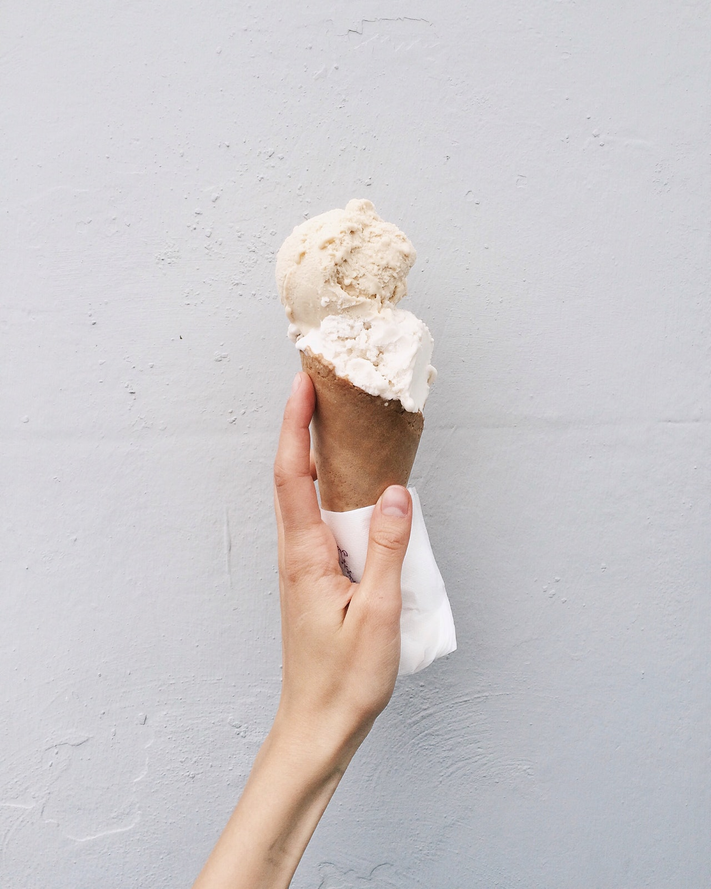

A fun chemistry experiment!
Estimated Amount of Time: 10-20 minutes
Click here for the directionsDid you know that you could make icecream without using a machine?
Water has three states: gas, liquid, and solid. Water becomes a solid at 32 degrees Farenheit (0 degrees Celsius), but if salt (sodium chloride) is present, the freezing point (temperature at which liquid → solid) lowers. In this experiment, you will add salt to ice cubes to make ice cream!